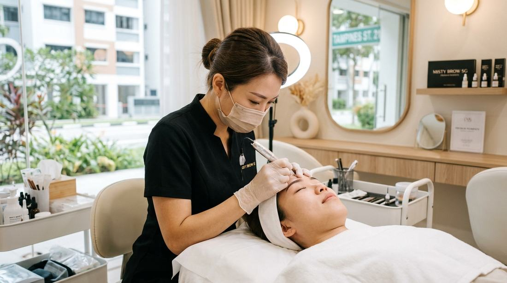

Eyebrow embroidery · Bukit Panjang
Your first eyebrow embroidery visit, step by step

Most people who message E-Perfect Beauty about brows are not asking for a trend. They are asking whether their brows will still look like theirs afterwards. This guide is the version of that answer Evelyn gives before a first appointment at 550B Segar Rd: what the visit is for, what you approve before pigment, how the colour behaves in the first days, and what is worth sending on WhatsApp so the recommendation is honest.
Eyebrow embroidery here is semi-permanent colour placed to follow bone structure, the hair you already have, and the way you actually get ready in the morning. It is not a block brow copied from a photo of someone else. If you want that heavier look, say so at the start. Evelyn would rather adjust the plan, or say the treatment is a poor match, than discover the mismatch after the session.
What to sort out before you come in
You do not need a perfect reference photo, and you do not need to decide the technique alone. A clear picture of your bare brows in daylight, plus one sentence about what bothers you, is enough for a first opinion. Useful notes are things like “one brow sits higher”, “I fill the front in every day”, or “I had embroidery elsewhere and the tail is too dark”.
If you have old pigment, a photo of that work healed — not only on the day it was done — matters more than a fresh close-up with makeup. Previous embroidery can often be improved, and sometimes it should be left alone until Evelyn has seen how it settled. That assessment can happen on WhatsApp before anyone books. There is no obligation to take a slot.
- Skip brow pencil, tint, or heavy concealer in the photo so the natural hair and skin show.
- Mention pregnancy, a recent facial peel, or a brow infection if any of those apply, so the timing can be discussed rather than assumed.
- Say whether you want a softer powdery finish, such as Korean misty brows, or a more defined hair-like stroke. Both still get mapped. Neither is chosen from a template.
How the appointment actually runs
The visit starts with looking, not with a machine. Evelyn checks how your brows sit on the bone, where the head of the brow should begin relative to your nose and eye, and how much natural hair is there to blend into. Face shape matters, but so does the face you make when you talk. A brow that looks balanced when you are still can look surprised when you are not.
She then draws the proposed shape. This is the part first-timers underestimate. You are meant to look at it in the mirror, disagree, and ask for the tail shorter or the front lighter. Pigment is not placed until that drawing is the brow you are willing to wear while it heals. The studio’s embroidery trust notes describe the same rule: mapping and a healing explanation come before colour.
Only after that approval does the embroidery itself start. Evelyn works in passes and pauses if you need a break. Clients often expect the session to hurt more than it does. Many describe it as manageable, and some rest through parts of it. That is a common report, not a promise that you will feel nothing. Numbing and pace are part of the conversation on the day, not a surprise.
Why the colour looks darker at first
Fresh brows usually look darker for the first few days, then soften as the skin heals. That early darkness is the most common reason people panic, and it is also the reason the shape is planned with the healed result in mind rather than the colour you see in the car on the way home. Evelyn explains what your skin type and chosen style are likely to do before the session, so the shade you settle into is the one you asked for.
The practical aftercare for those first 7–10 days is short and is written up separately: keep the area dry, do not scrub, skip makeup directly on the brows, and use the balm you are given sparingly twice a day. Light flaking can be normal. The full note is aftercare for eyebrow embroidery. If something looks unusual — spreading redness, pus, or a patch that will not calm down — message the studio rather than trying a new product on it.
Singapore humidity does not change that basic rule, but it does change habits. Sweat, a long walk from the station, and a fringe that stays damp against the brow are all reasons to pat the area dry instead of rubbing. Swimming and heavy exercise are better delayed while the skin is still open. If your week cannot avoid them, say so before you book so the timing of the appointment can move, not the aftercare.
How long it lasts, without a made-up number
Results are semi-permanent. They soften over time. How fast that happens depends on your skin, sun, skincare acids, and whether the aftercare was actually followed. The studio does not publish a single “lasts X months” figure, because that number would be wrong for a large share of clients. Touch-up timing is discussed in the consultation, after Evelyn has seen your skin, not from a chart on the website.
The same honesty applies to price. The embroidery menu lists brow, lip, and eyeliner work as quote-on-WhatsApp. You get an estimated price and a slot only after the recommendation is clear, and you can decline.
Who should wait, or ask first
- If you are still deciding between a very dramatic brow and a soft one, send photos of both and say which days of the week you wear makeup. The design should survive the days you do not.
- If a previous artist left a shape you dislike, do not book a “cover-up” date before the photo review. Covering the wrong shape with more pigment can make the next correction harder.
- If your concern is actually sparse lips or dull skin rather than brows, the brow appointment is the wrong first treatment. The lip embroidery guide and the facial or whitening guide are the closer reads.
Questions people ask before they book
Will my brows look very dark after embroidery?
Usually yes for the first few days. They then soften as they heal. Evelyn explains what to expect for your skin and the style you chose before pigment is applied.
Is the first session painful?
Most clients describe it as more manageable than they expected, and some rest during parts of it. You can pause. Feeling nothing is not guaranteed.
Can uneven brows or old embroidery be fixed?
Often yes. Mapping is used to improve balance, and old work can be assessed on WhatsApp first. The answer depends on your natural shape and how the earlier pigment healed.
Do I need an appointment?
Yes. Treatments at 550B Segar Rd are by appointment so the visit stays unhurried. Message a preferred date after you have had the recommendation.
More from the journal: